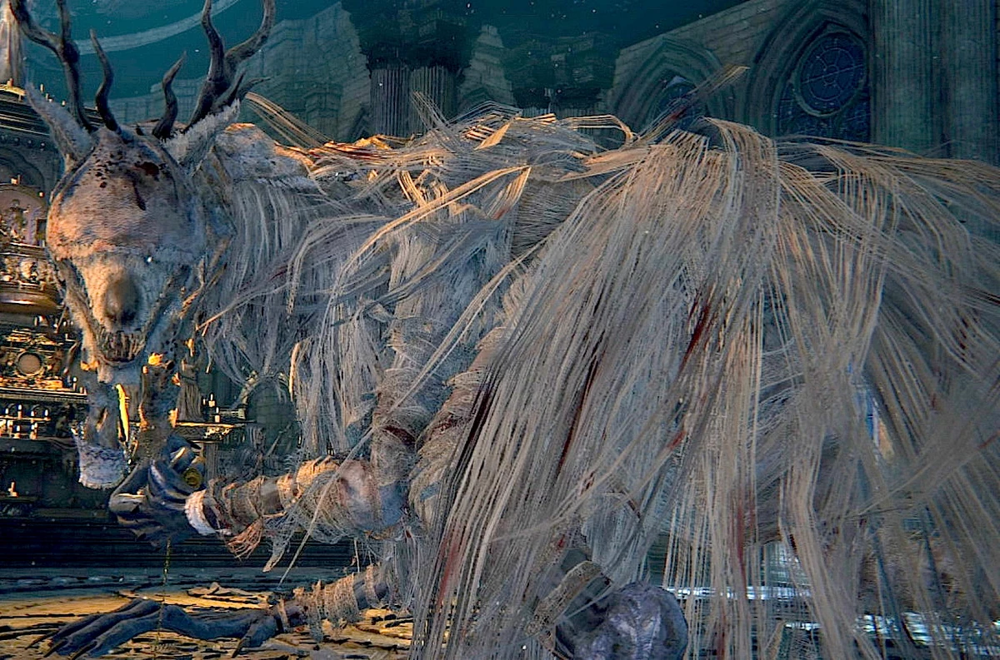
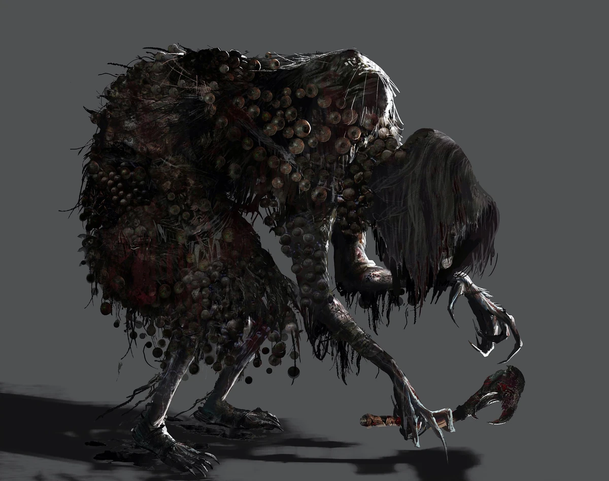

Cathedral Ward
Cathedral Ward is a central area of Bloodborne, located in the heart of Yharnam. This area serves as a major hub for players, connecting several key locations and offering access to important NPCs and quests. The Ward is characterized by its grand, Gothic architecture and eerie atmosphere.
The Healing Church
The Healing Church is a pivotal institution in the lore of Bloodborne, and Cathedral Ward is one of its main strongholds. The church's influence is evident in the grandiose structures and the presence of numerous church servants and hunters.
Cathedral Ward is a significant area in Bloodborne, serving as a major hub and a central location for the game’s lore. The Ward is a prominent district in Yharnam, known for its grand Gothic architecture, towering spires, and intricate stonework. This area reflects the influence and power of the Healing Church, an organization that has shaped much of the city’s history and culture. Cathedral Ward is home to several key locations, including Oedon Chapel, a sanctuary for survivors, and the Grand Cathedral, the heart of the Healing Church’s operations. The area is filled with church servants, hunters, and various NPCs who offer quests and insight into the game’s lore.

Bosses
Cathedral Ward features some of the game's challenging bosses, each with unique lore and combat mechanics.
Vicar Amelia
Vicar Amelia is the main boss of Cathedral Ward. She is a high-ranking member of the Healing Church who has transformed into a gigantic beast. The fight against her is one of the most memorable encounters in Bloodborne.
The Witch of Hemwick
The Witch of Hemwick is another boss accessible through Cathedral Ward. While not directly located within the Ward, the path to Hemwick Charnel Lane begins here. The Witch is known for her ability to summon minions and her deceptive fighting style.
Leave a comment
Lore
Cathedral Ward is steeped in the lore of the Healing Church and its efforts to control the beast plague. The area provides numerous clues about the church's inner workings and the consequences of their experiments.
The Healing Church
The Healing Church's influence is most prominent in Cathedral Ward. The church's experiments with the Old Blood led to both miraculous healing and horrific transformations. The area is filled with church hunters and clerics, many of whom have fallen to the beast plague.
Blood Healing
Blood healing is a central theme in Bloodborne, and Cathedral Ward is a key location for understanding its origins and implications. Players uncover the dark secrets of the Healing Church's practices as they navigate the Ward.
The Rise and Fall of the Healing Church
The Healing Church’s rise to power was fueled by the promise of miraculous cures through blood ministration. However, the church’s reliance on the Old Blood had dire consequences. Prolonged exposure to the blood led to the spread of the beastly scourge, transforming many citizens, including church members, into horrific beasts.
Key Events and Figures
Laurence, the First Vicar: Laurence was a disciple of Master Willem of Byrgenwerth and the founder of the Healing Church. His decision to use the Old Blood marked the beginning of the church’s rise and the subsequent spread of the beastly scourge. Laurence himself eventually succumbed to the plague, transforming into the beast known as the Cleric Beast.
Ludwig, the Holy Blade: Ludwig was the first and most revered of the church hunters. His dedication to the church’s cause and his formidable skills in combat made him a legendary figure. However, he too fell victim to the corruption of the Old Blood, becoming a monstrous beast known as Ludwig, the Accursed.
Vicar Amelia: Amelia is a high-ranking member of the Healing Church, serving as the vicar in the Grand Cathedral. Her transformation into a beast symbolizes the church’s inability to control the very plague they sought to cure. Amelia’s fight is a pivotal moment for players, revealing the depth of the church’s failure.
Theological and Esoteric Beliefs
The Healing Church’s teachings revolve around the worship of the Great Ones, eldritch beings believed to hold the key to transcendence and immortality. The church’s scholars and clerics conducted numerous rituals and experiments in an attempt to commune with these beings and harness their power.
Impact on Yharnam
The influence of the Healing Church permeates every aspect of Yharnam’s society. From the grand cathedrals and clinics to the widespread use of blood ministration, the church’s presence is omnipresent. However, the very practices that brought the church to power also led to the city’s downfall.
The beastly scourge, a direct result of the church’s experiments with the Old Blood, turned Yharnam into a nightmarish landscape filled with monstrous creatures and deranged citizens. The church’s attempts to contain and control the plague only exacerbated the situation, leading to a cycle of violence and transformation.

Leave a comment
Sidequests
Arianna
Arianna is a mysterious woman found in Cathedral Ward. Players can send her to Oedon Chapel for safety. Her questline reveals more about the hidden depths of Bloodborne's lore.
First Interaction: Arianna is found in a building in Cathedral Ward. She is hesitant but can be persuaded to move to Oedon Chapel.
Subsequent Interactions: If sent to Oedon Chapel, Arianna provides players with the Oedon Writhe rune.
Final Interaction: Later in the game, Arianna's questline takes a dark turn, revealing more about the nature of the Old Blood and the Great Ones.

Adella the Nun
Adella is a nun found in the Cathedral Ward. She can be sent to Oedon Chapel, where she offers assistance to the player. Her story intersects with those of other NPCs in the Ward.
First Interaction: Adella is found imprisoned in Cathedral Ward. Players can rescue her and send her to Oedon Chapel.
Subsequent Interactions: At Oedon Chapel, Adella provides the player with the Church Bow (Female) gesture and several Blood of Adella items.
Final Interaction: Adella's storyline is influenced by the player's interactions with other NPCs, particularly Arianna.
Alfred
Alfred is a hunter associated with the Healing Church. He offers valuable information and assistance throughout the game, starting with interactions in Cathedral Ward.
First Interaction: Alfred is first encountered near the entrance to Cathedral Ward. He provides insight into the Healing Church and its enemies.
Subsequent Interactions: Players can summon Alfred for assistance in boss fights and further conversations reveal more about his motives and the church's history.
Final Interaction: Alfred's questline culminates in a dramatic confrontation in the Grand Cathedral.

Leave a comment